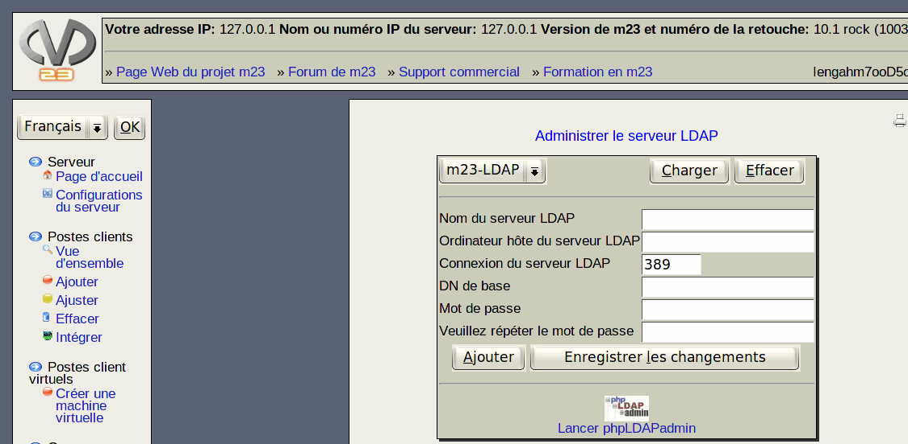

Ce dialogue vous donne la possibilité d'administrer plusieurs serveurs LDAP, afin que ceux-ci puissent être utilisés pour l'authentification des utilisateurs par les postes clients. De plus, OpenLDAP peut être installé et configuré sur le serveur m23.
- Ajouter un nouveau serveur LDAP: Entrez les données nécessaires dans les champs de saisie. Le nom du serveur peut être choisi librement sous Nom du serveur LDAP il n'est pas nécessaire qu'il soit identique avec le nom d'hôte du serveur.Ordinateur hôte du serveur LDAP par contre, l'adresse IP ou le nom d'hôte complet (avec FQDN) du serveur LDAP est requis. Si vous utilisez un nom d'hôte, celui-ci doit être resolvable par le poste client. De plus, vous pouvez changer l'adresse de connexion indiquée sous Port de connexion du serveur LDAP. Si vous entrez un mot de passe d'administrateur valide pour le serveur LDAP dans Mot de passe et Veuillez répéter le mot de passe, m23 peut enregistrer les données d'authentification pour les postes clients sur le serveur LDAP. Si vous laissez libre les champs pour le mot de passe, les données d'authentification ne pourront qu'être lues de ce serveur. Enfin, cliquez sur Ajouter.
- Modifier un serveur LDAP existant: Sélectionnez en premier lieu un serveur LDAP dans la liste et cliquez sur Charger, les données du serveur seront affichées dans les champs de saisie. Modifiez les valeurs souhaitées, puis, cliquez sur Enregistrer les changements.
- Effacer un serveur LDAP: Sélectionnez tout d'abord un serveur LDAP dans la liste, puis, cliquez sur Effacer.
- Editer les données enregistrées sur le serveur LDAP: Pour la configuration des données enregistrées sur le serveur LDAP, m23 utilise l'interface graphique de phpLDAPadmin. Celle-ci peut être lancée en cliquant sur son icône.
root
2015-04-30